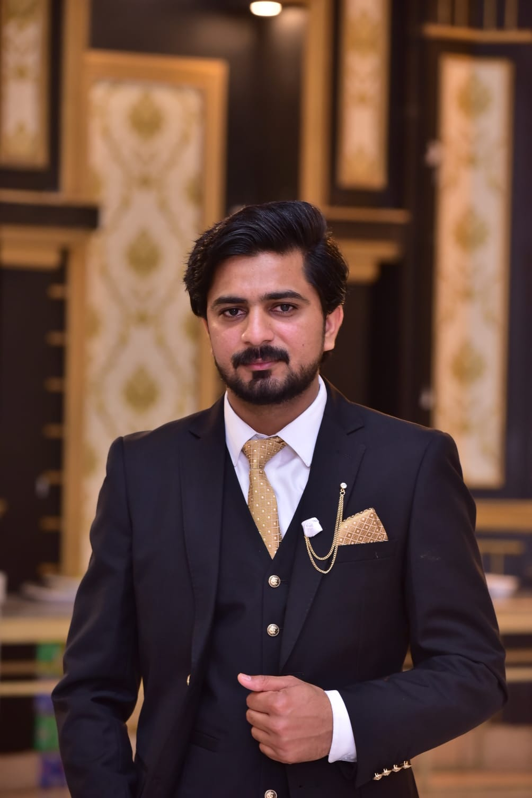

01 · Open source platformGL.
GlobaLeaks — Secure Whistleblowing
Building and improving report management, admin workflows, backend integrations, permissions, and security-sensitive features in an established open-source platform.
I'm Muhammad Faizan Javaid, a full-stack software engineer with 5+ years of web development experience. I build reliable Angular applications, Python backend features, and security-aware SaaS workflows — including contributions to the open-source GlobaLeaks platform.

From secure open-source software to enterprise workflows, here's how I've contributed to production applications.
Building and improving report management, admin workflows, backend integrations, permissions, and security-sensitive features in an established open-source platform.
Led frontend development for university operations across admissions, LMS, HR, inventory, finance, and administrative dashboards.
Created and maintained 100+ Cypress tests and contributed to authentication, permissions, audit logging, and secure file workflows within GlobaLeaks.
Contributed package-tracking functionality and database-driven pages to a PHP/MySQL web application during my early software career.
I work across application layers to understand the requirement, implement features, and troubleshoot what happens in production.
I use automated testing, code review, and careful debugging to reduce avoidable regressions in complex workflows.
I document decisions, review contributions, mentor teammates, and communicate across engineering and product stakeholders.
Currently working at
Genesis TechnologiesCurrently studying
MS Computer Science · University of FaisalabadOpen to
Remote jobs · Startup teams · Contract workI'm Muhammad Faizan Javaid, a software engineer based in Faisalabad, Pakistan, with over five years of web development experience.
My technical journey began in Electrical Engineering, where I learned to analyze systems and troubleshoot problems methodically. I later moved into software development, building production applications with Angular, AngularJS, TypeScript, Python, and REST APIs.
A significant part of my career has been contributing to GlobaLeaks, an open-source whistleblowing platform where security and reliability matter. I've worked on administrative workflows, backend services, permissions, audit logging, authentication, database migrations, and automated testing.
Beyond implementing features, I review code, mentor junior developers, document technical decisions, and collaborate with engineers and stakeholders. I'm currently pursuing an MS in Computer Science while continuing my professional software work.
I'm interested in remote engineering roles and startup collaborations where I can take ownership of meaningful features and help build dependable products.
Download My CV ↗I contribute to production SaaS and GlobaLeaks features across Angular, Python/Twisted, REST APIs, permissions, migrations, and automated tests. I review code, mentor junior developers, and collaborate with a wider engineering team of approximately 20–30 developers.
I led frontend development for a multi-module university management application, building reusable Angular interfaces, forms, dashboards, validations, and Java backend integrations.
I contributed to package-tracking functionality and database-backed web pages using PHP, MySQL, Bootstrap, and JavaScript.
I developed web fundamentals at Wapexp College and gained industrial engineering, troubleshooting, and documentation experience at Sapphire Textile Mills.
Angular 14–20, AngularJS 1.8, TypeScript, JavaScript, RxJS, NgRx, Signals, Tailwind, Angular Material, responsive UI.
Python, Twisted, FastAPI, REST APIs, SQLAlchemy, PHP, Laravel, Node.js, MySQL, SQLite, PostgreSQL, MongoDB.
Cypress, end-to-end testing, regression testing, API testing, debugging, code reviews, and test maintenance.
Keycloak, OAuth2/OIDC, JWT, role-based permissions, audit logs, secure file handling, SHA-256/SHA-512 verification.
Git, GitHub, Linux (Ubuntu/Debian), Angular CLI, npm, Docker fundamentals, CI/CD fundamentals, Trello.
Feature ownership, technical documentation, mentoring, asynchronous communication, cross-functional collaboration, production troubleshooting.
I'm available immediately for remote frontend, full-stack, and product engineering roles, as well as startup and contract collaborations. Flexible for international timezone overlap.